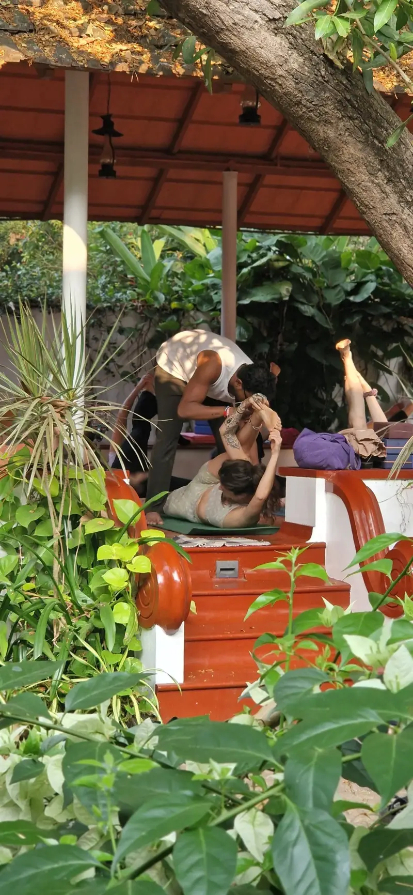

Moments from our yoga classes, teacher trainings and retreats in Fort Kochi, Kerala: morning practice in the garden pavilion, hands-on guidance in the postures, traditional ceremonies during the 200-hour teacher training, shared vegetarian meals, and retreat days in the hills and at the waterfalls. Every photograph here was taken at the school or on our own retreats.
